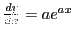

Next: Leibnitz's Formula for the Up: Successive differentiation Previous: Notation Contents Index
For certain functions a general expression involving  may be found for the
may be found for the  -th derivative. The usual plan
is to find a number of the first successive derivatives, as
many as may be necessary to discover their law of formation,
and then by induction write down the
-th derivative. The usual plan
is to find a number of the first successive derivatives, as
many as may be necessary to discover their law of formation,
and then by induction write down the  -th derivative.
-th derivative.
Solution. , , ..., .
Solution. , , , , ... .
Solution. ,